Unlabeled LC-MS Workflow¶
This is a tutorial for processing Unlabeled LC/MS data files through El-MAVEN.
Contents
- Preprocessing
- Launch El-MAVEN
- Adjust Global Settings
- Load Samples
- Load Compound Database
- Mark Blanks
- Alignment
- Peak Grouping
- Baseline
- Mass Spectra
- Peak Curation
- Guidelines for Peak Picking
- Export options
Preprocessing
msConvert is a command-line/ GUI tool that is used to convert between various mass spectroscopy data formats, developed and maintained by proteoWizard. Raw data files obtained from mass spectrometers need to be converted to certain acceptable formats before processing in El-MAVEN.
Input
msConvert supports the following formats:
- .mzXML
- .mzML
- .RAW Thermofisher
- .RAW Walters
- .d Agilent
- .wiff format ABSciex
The settings used for msConvert as a GUI tool are captured in the following screenshots:
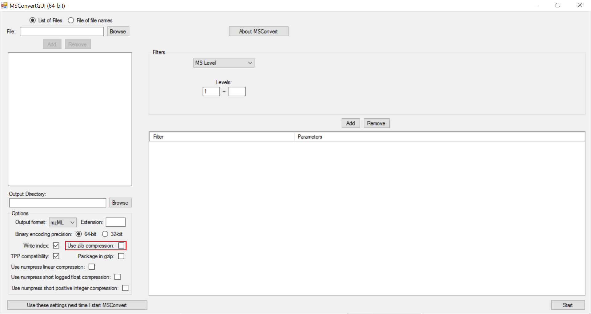NOTE: Zlib compression is enabled by default in msConvert. El-MAVEN in its current form does not support Zlib compression. It is important to uncheck “Use Zlib compression” box.
Output
msConvert can convert to an array of different formats but El-MAVEN primarily uses .mzXML and .mzML formats.
Launch El-MAVEN
Once sample files are ready for processing, launch El-MAVEN.
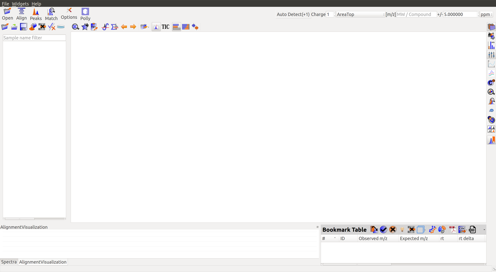Adjust Global Settings
Global Settings can be changed from the Options dialog (Insert icon). There are 9 tabs in the dialog. Each of these tabs has parameters related to a different module in El-MAVEN. For example, a tab for Instrumentation details, a tab for file import settings, et cetera.
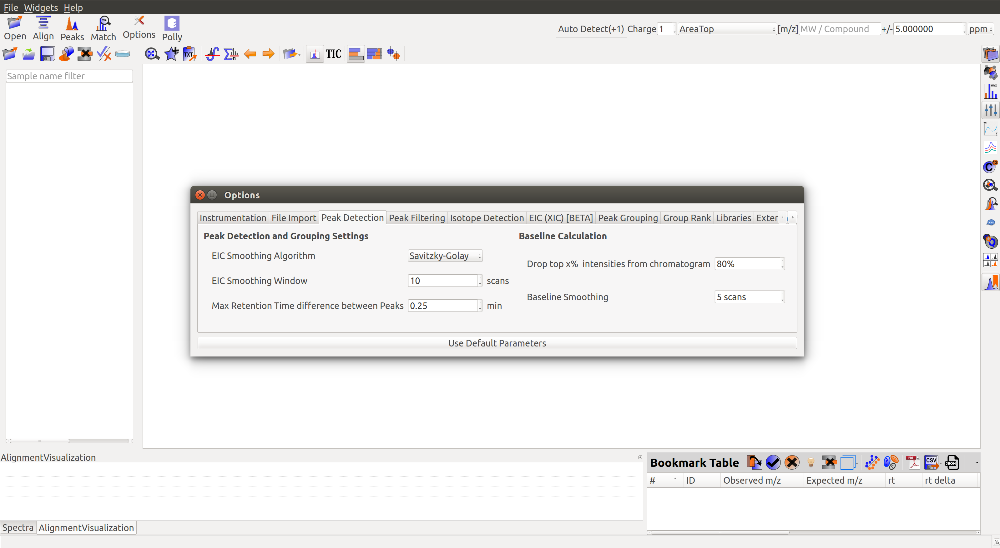To know more about the functionality of different tabs and their settings, user can see the Widgets page. Please be sure to set the desired settings before processing an input file.
Load Samples
User can go to File in the Menu, click on Load Samples|Projects|Peaks option in the File menu. Then navigate to the folder containing the sample data, select all .mzXML or .mzml files and click Open. A loading bar displays the progress at the bottom.
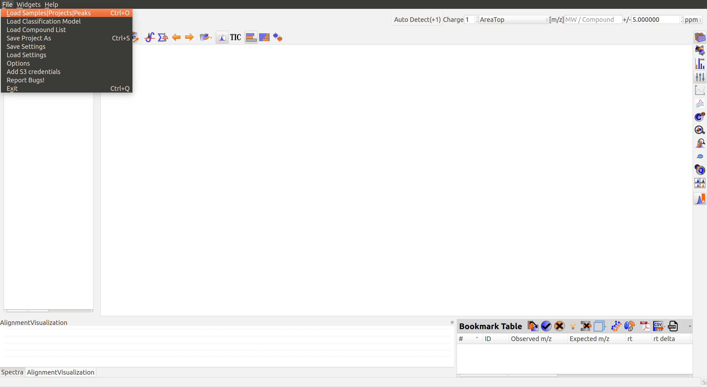When the samples have loaded, user should see a sample panel on the left side. If it is not displayed automatically, click on the Show Samples Widget button on the toolbar. El-MAVEN automatically assigns a color to every sample. User can select/deselect any sample by clicking the checkbox on the left of the sample name.
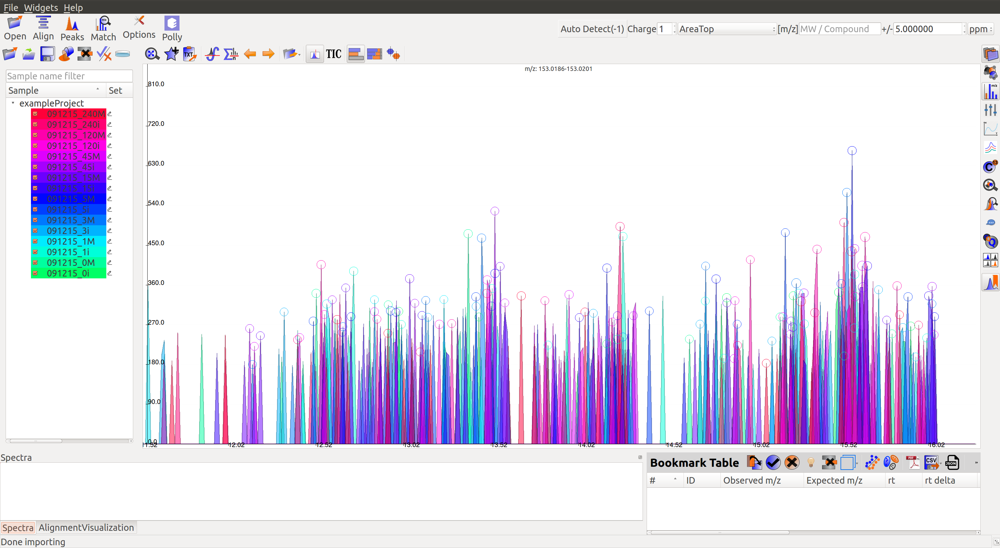Load Compound Database
User can click on Compounds option in the leftmost menu, navigate to the folder containing the standard database file, select the appropriate .csv file and click Open.
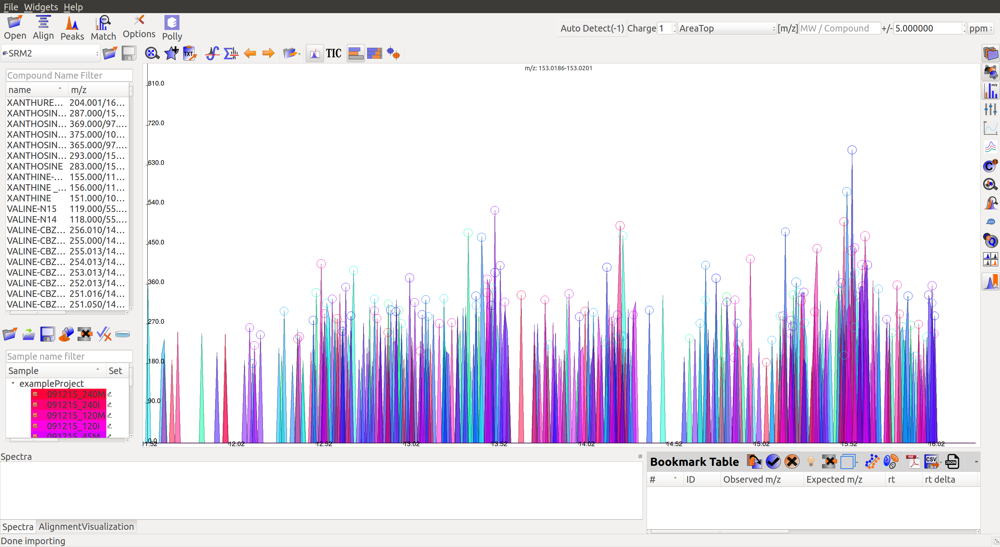This is a sample Compound Database:
Screenshot 7
It lists all metabolite names, chemical formula, HMDB ID, and the class/category of compounds they belong to (if known).
Mark Blanks
The user can mark the blanks by selecting the blank samples from the list on screen, and clicking on the Set as a Blank Sample icon (Insert icon) in Samples menu.
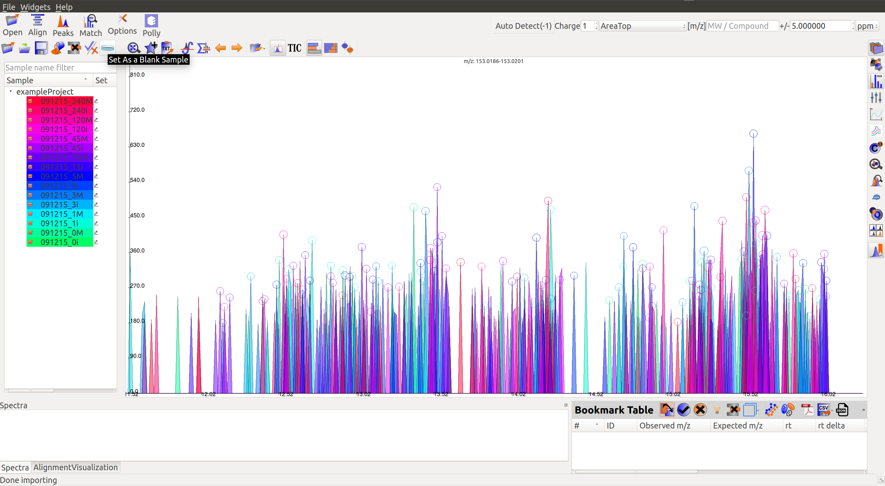Multiple blanks can be marked together. The blanks will appear black as shown in the image below:
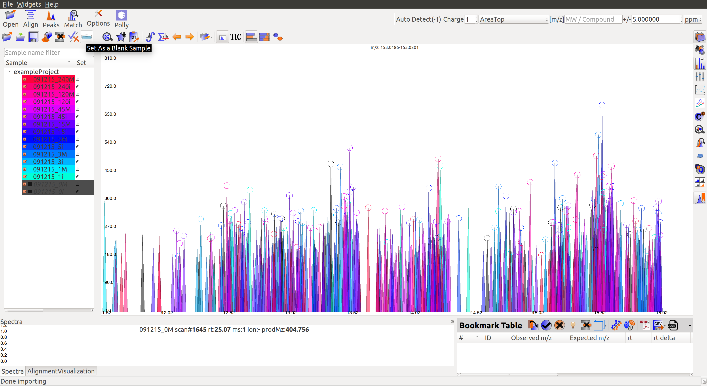Alignment
Prolonged use of the LC column can lead to a drift in retention time across samples. Alignment shifts the peak Rts in every sample to correct for this drift and brings the peaks closer to median Rt of the group.
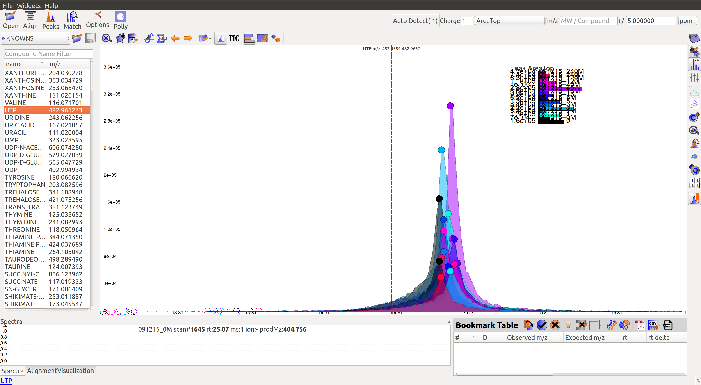In the above image, EIC for a UTP group is displayed. If the samples were aligned, all peaks would lie at the same RT. Since this is not the case the samples need to be aligned.
Alignment visualization (Insert icon) can be used to judge the extent of deviation from median RT.
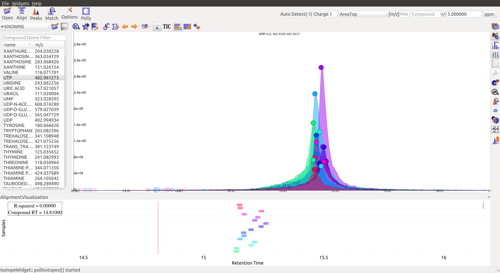In the above visualization, each box represents a peak from the selected group at its current RT. Samples are said to be perfectly aligned when all peak boxes lie on the same vertical axis. The peaks are considerably scattered in the above image and therefore the samples should be aligned for better grouping of peaks.
Perform Alignment
Alignment settings can be adjusted using the Align button (Insert icon). This example was aligned with Loess fit algorithm with default parameters.
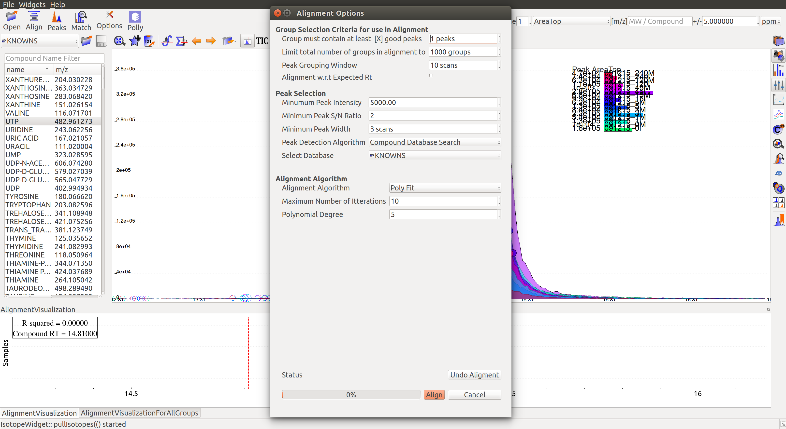Post-alignment the peaks in the group should appear closer to the median Rt of the group.
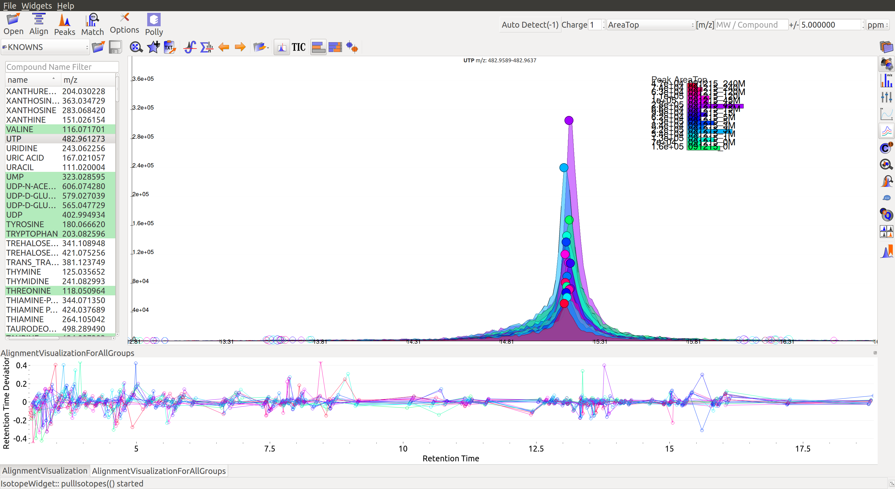 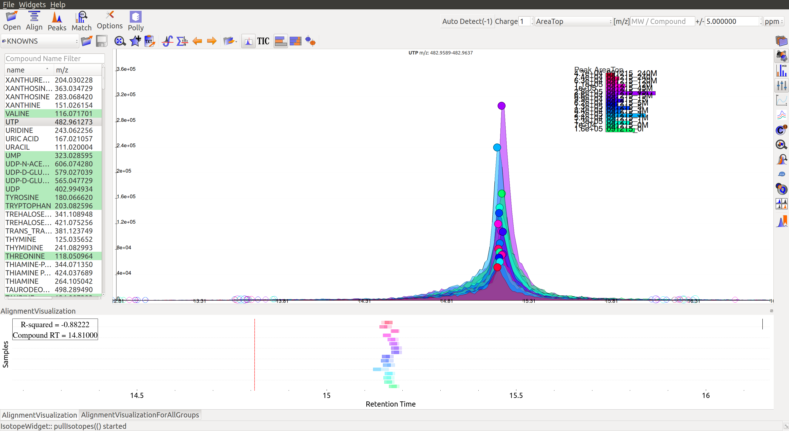Pre-alignment, the peaks were considerably scattered while the aligned peaks lie nearly on the same axis. User can run alignment again with different parameters if required (or with a different algorithm). Further details on Alignment settings are available on the Widgets page.
Peak Grouping
Peak grouping is an integral part of the El-MAVEN workflow that categorizes all detected peaks into groups on the basis of certain user-controlled parameters. A group score is calculated for every peak during the process. The formula for this score takes into account the difference in Rt and intensities between peaks (smaller difference leads to a better score) and any existing overlap between them (higher extent of overlap leads to better score). All three parameters have certain weights attached to them that can be controlled by the user. The formula for the score is shown in the image. More details on it can be found on the Widgets page.
Screenshot 15
The above image shows two groups in the EIC window. The highlighted (solid circles) peaks belong to group A, the peaks to its left with empty circles belong to another group B. The short peaks in group A that are close to the baseline and peaks in group B come from the same samples. Additionally, the high intensity peaks of group A have a similar peak shape to group B peaks. These peaks might have been wrongly classified into separate groups because of the difference in Rt range of the two sets of peaks. The weights attached to difference in Rt and intensities, and extent of overlap can be adjusted for better grouping.
Grouping parameters can be changed from the Options dialog (Insert icon).
Screenshot 16
Giving less priority to difference in RTs and intensities results in the two groups being merged into a single group while the peaks that lay close to the baseline are no longer classified as valid peaks.
Baseline
When measuring a number of peaks, it is often more effective to subtract an estimated baseline from the data. This baseline should be set where ideally no peaks occur. Although sometimes the program sets a particular baseline such that one or more peaks occur below that baseline value. In the following image, the dashed line represents each baseline:
Screenshot 17
The corresponding peaks are indicated with solid circles:
Screenshot 18
The baseline correction can be done in the Peak Detection tab by clicking on Options button:
Screenshot 19
Further details on settings can be accessed here.
The user has an option to set Ionization mode to Positive, Negative or Neutral from the top left part of the screen:
Screenshot 20
The m/z option scans the groups to find any specific m/z value and plot its corresponding EIC. The _+/-_option to its right is to specify the expected mass resolution error in parts per million (ppm).
Screenshot 21
Mass Spectra
Mass Spectra Widget (Insert icon) displays each peak, its mass, and intensity for a scan. As the widget shows all detected masses in a scan, the ppm window for the EIC and consequently grouping can be adjusted accordingly. This feature is especially useful for MS/MS data and isotopic detection.
Screenshot 22
Peak Curation
There are multiple ways to curate peaks in El-MAVEN, though following are the two broad workflows:
- Manual Peak Curation using Compound DB widget
- Automated Peak Curation
Manual Peak Curation using Compound DB widget
To use manual curation using the compound DB widget, the user has to iterate over all the compounds in the compound DB on the extreme left of the window, as highlighted in the image below.
Screenshot 23
Once on a compound, El-MAVEN shows the highest ranked group for that M/Z. The user can now choose a group or reject it. There are two ways to do this.
In the first workflow, the user needs to double click on the peak group of his choice. This will get the Rt line to the median of the group and also add the metabolite to the bookmarks table (as shown in the image below). User can read more about the bookmarks table here.
Screenshot 24
When the user selects the first group they would be asked if they would like to auto-save the state of the application. This feature allows the user to go back to his curated peaks if they so wish in future.
Screenshot 25
The other sub-workflow is to mark peaks good or bad from the top of the EIC as shown in the screenshots below.
Screenshot 26
Qualifying peaks as good or bad is explained in the next few sections.
Automated Peak Curation
El-MAVEN can automatically select high intensity and high quality groups. This workflow is called automatic peak curation. To enable this workflow the user has to click on the peak detection widget present in the top left of the window. Upon clicking the widget the user will see the following dialog box.
Screenshot 27
This dialog box (Insert icon) is the peak detection widget. The user can read more about it here.
Upon selecting the default parameters, the user can click on Find peaks to select the most important peaks. Once the peak detection is completed a peak table shows up at the bottom of the window.
Screenshot 28
The user can now iterate over these peaks by marking them as good or bad by clicking on the good or bad buttons present in the peaks table as shown below.
Screenshot 29
Screenshot 30
Guidelines for Peak Picking
1. Peak’s width and shape are two very crucial things to look at while classifying a peak as good or bad. Peak’s shape should have a Gaussian distribution and width should not be spread across a wide range of RT.
Screenshot 31
2. Peak Intensities for a group are plotted as bar plots for all the samples. These bar plots have heights relative to the other samples.Thus, for a good peak the intensities should be high.
Screenshot 32
3. Intensity Barplot heights should be higher for all the samples than Blank samples. We use intensities of Blank samples to set our group baseline. Blank intensities are used to calibrate intensity values across zero concentration.
4. A good peak should have standards with varying intensity in a particular fashion (increasing or decreasing).
5. Quality Control (QC) samples give us information about the quality of the data, i.e., it assesses reproducibility and software performance. Samples whose intensities and concentrations are already known are used as QCs to determine if the instrument are working as expected. Values (and scales) can be calibrated using QCs.
6. If peak groups of a particular metabolite are separated apart (Not aligned well) then we should use stringent alignment parameters to overcome this problem.
7. For a particular metabolite, let’s say if it has n number of groups, then the group which is much closer to the above guidelines should be selected as good peak. Multiple groups can also be selected in case of ambiguity (if Rt information is not provided).
Export options
There are multiple export options available for storing marked peak data. User can either generate a PDF report to save the EIC for every metabolite, export data for a particular group in .csv format, or export the EICs to a Json file as shown below.
Screenshot 33
User can select All, Good, Bad or Selected peaks to export.
Screenshot 34
The Export Groups to CSV option (Insert icon) lets the user save the ‘good’/’bad’ labels along with the peak table. User also has the option to filter out rows that have a certain label while exporting the table.
Generate PDF Report option (Insert icon) saves all EICs with their corresponding bar plots in a PDF file.
Export EICs to Json option (Insert icon) exports all EICs to a Json file.
Another option is to export the peak data in .mzroll format that can be directly loaded into El-MAVEN by clicking on the Load Samples|Projects|Peaks option in the File menu. For this, go to the File option in the menu bar, and click on ‘Save Project’.
Screenshot 35